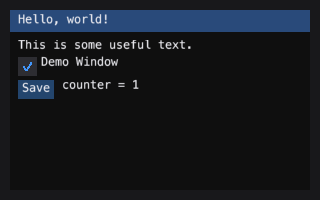

Quickstart
A frame is a context manager. Inside it, calls to im draw widgets onto
whatever painter you gave it:
from cmtk import im
from cmtk.testing import RecordingPainter
painter = RecordingPainter()
with im.frame(painter, (0, 0, 320, 200)):
im.begin("Demo")
im.text("Hello, world!")
if im.button("Save"):
pass # save things here
im.end()
RecordingPainter records every operation instead of performing them, so
this runs with no window and no toolkit. The same widget code, unchanged, runs
against a Qt painter on the desktop, the quad painter on a wgpu surface, or
the Pyodide build in a browser.

The one place Python must differ from C++
C++ writes results through bool* and float*. Python has no pointers, so
the value comes back beside the changed flag:
painter = RecordingPainter()
with im.frame(painter, (0, 0, 200, 80)):
im.begin("Sliders")
changed, v = im.slider_float("alpha", 0.5, 0.0, 1.0)
im.end()
assert isinstance(changed, bool)
assert isinstance(v, float)
This is what pyimgui and imgui-bundle do, so a port from C++ or from either Python binding lands unchanged.
What the painter drew
Every painter records calls in order. RecordingPainter keeps per-kind
lists and a flat calls list for cross-kind ordering:
painter = RecordingPainter()
with im.frame(painter, (0, 0, 200, 80)):
im.begin("Demo")
im.text("hi")
im.button("OK")
im.end()
# seven pixels per character, sixteen per line -- the metrics are
# deliberately round so a reader can do the arithmetic in their head
assert painter.text_width("hi") == 2 * 7.0
assert painter.line_height() == 16.0
assert len(painter.strings) == 3 # "Demo" title, "hi", "OK"